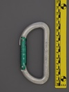

| Image | Summary | ||||
|---|---|---|---|---|---|
 | KONG BONAITI (bent gate) | asymmetric D | n/a | n/a | basic keylock bent gate |
|  | KONG-BONAITI (D) (offset gate opening) | D | n/a | n/a | offset gate results in huge gate opening |
| KONG-BONAITI (D) (screwlock) | D | manual | nose stopped - longitudinal interferance | basic screwlock D | |
 | KONG-BONAITI (Helium) (5.10) | asymmetric D | n/a | n/a | early lightweight compact keylock |
 | KONG-BONAITI (Helium) (5.10) (reverse 5.10) | asymmetric D | n/a | n/a | early lightweight compact keylock |
 | KONG-BONAITI (oval) (2250/800) (small font) | oval | n/a | n/a | oval with gate scallop |